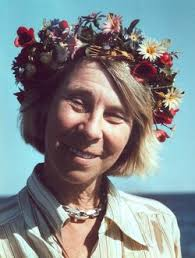

Kimi Räikkönen
Tove Jansson
Linus Torvalds


| Characters of the history of Finland | |||||||
|---|---|---|---|---|---|---|---|
| Home | Places | Historic Data | >Characters | Sports | Economy | Gastronomy | Form |
Kimi Räikkönen |
Tove Jansson |
Linus Torvalds |
|||||
|
 | |
|||||
| Kimi-Matias Räikkönen was born the 17 of october of 1979 in Espoo, Finland and at the moment he had 46 years. | Tove Marika Janson was born the 9 of august of 1914 in Helsinky, Finland and she died the at the age of 86 years the 27 of june of 2001 in Helsinky, Finland. | Linus Benedict Torvalds was born the 28 of december of 1969 in Helsinky, Finland and at the moment he had 28 years | |||||
| He is an Finnish racing and rally driver nicknamed "The Iceman" who competed in Formula 1 or F1 between the years 2001 and 2021, and in the World Rally Championship from 2009 to 2011, in his career hi won the Formula One World Drivers Championshimp in 2007 with the team of Ferrari and won 21 Gran Prix too in 19 seasons. | She was a Finnish writer, an illustrator, an historian, and a painter in finnish and swedish language. She was very famous by her books for kids "The Mumin Family" | He is a Finnish and American software engineer who is creator and lead developer of the program Linux since 1991 | |||||